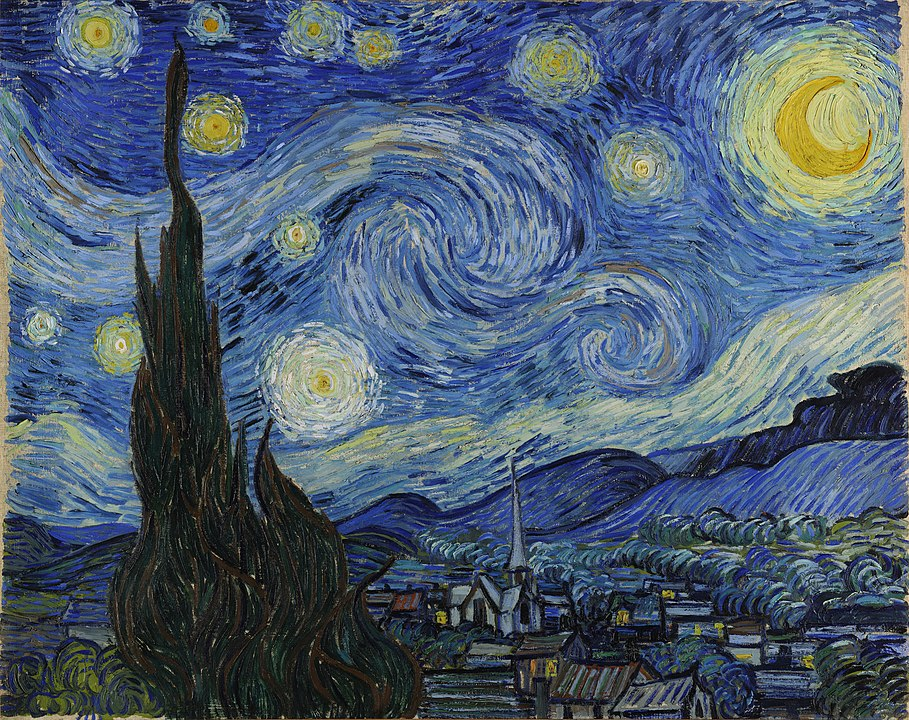

Van Gogh's two years at Arles in France (1888–89) were one of his most artistically productive periods. He was enchanted by the local countryside and light; his works from this period are rich in yellow, ultramarine and mauve. Among the most well-known works of that time is an oil painting of his rented room, entitled Bedroom in Arles.

On view: Vincent van Gogh Museum, Amsterdam
In Arles, the painter began a friendship with the owners of a local hotel, known as the Cafe de la Gare. The building inspired two more famous creations. The first of which is known as The Yellow House.

On view: Vincent van Gogh Museum, Amsterdam
The second painting is one of many people's favourites: The Cafe Terrace at Night. The location at the Place du Forum in Arles was refurbished to replicate van Gogh's painting.

On view: Kröller-Müller Museum, Otterlo
After his time at Arles, van Gogh moved to a former monastery at nearby Saint-Remy. The building's garden and surrounding countryside became the main subjects of his paintings. Some of his works from this time are characterised by swirls, such as The Starry Night.
On view: The Museum of Modern Art, New York
Van Gogh suffered from mental illness all his life. He was not commercially successful, and his suicide at aged 37 came after years of poverty.
Van Gogh is known to have sold only a single painting in his lifetime; for 400 francs or about €1,800 in today's value. In 1990, one of his paintings, Portrait of Dr. Gachet, fetched $82.5 million at auction.
Source: All text and images from Wikipedia.